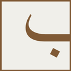

Bu imtihon oʻz bilimingizni sinash uchun. Imtihondan oʻtish uchun qoʻshimcha sunʼiy intellekt (AI) yoki kitob/lugʻatdan foydalanmaslikni soʻraymiz.
Rozimisiz?

Bayyina
A2 · Yakuniy Imtihon · Mufradot
اَلْاِمْتِحَانُ النِّهَائِيُّ
Yakuniy imtihon — A2 1–12 darslar lug'atlari (60 ta savol)
Bu imtihon A2 darajadagi 1–12 darslarning barcha lug'atlarini (635 so'z) qamrab oladi. Har bo'limdan 5 tadan, jami 60 ta savol tasodifiy tanlanadi — har urinishda savollar boshqacha bo'ladi.
Tayyor bo'lgach, pastdagi "Men imtihonga tayyorman" tugmasini bosing — imtihon 30 daqiqa bilan cheklangan, o'tish chegarasi 90%.